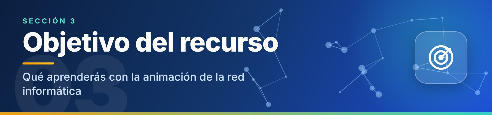

Objetivo del recurso

OBJETIVO GENERAL
Comprender, mediante una animación interactiva en Canvas, cómo se comunican los dispositivos de una red informática local y cómo viaja la información entre ellos.
Al finalizar el recurso, el estudiante será capaz de:
1Identificar
Los dispositivos básicos de una red: computadoras, switch, router, servidor e Internet.
2Explicar
La función que cumple cada dispositivo.
3Describir
La ruta que sigue un paquete de datos desde su origen hasta su destino.
4Reconocer
El modelo cliente-servidor (solicitud y respuesta).